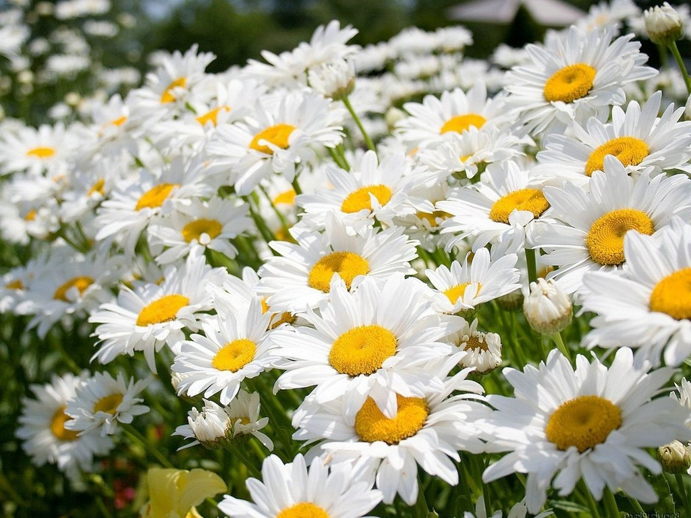

Çobanyastığı — bitkilər aləminin astraçiçəklilər dəstəsinin mürəkkəbçiçəklilər fəsiləsinə aid bitki cinsi.Dünya florasının tərkibində çobanyastığının 50 növü yayılmışdır. Cinsin Qafqazda 3, o cümlədən Azərbaycanda 2 növünə təsadüf edilir. Botanika elmində işlədilən bitki adlarının nomenklaturasında dərman çobanyastığı başqa adla, yəni səhv olaraq "vulgare" kimi təqdim edilmişdir. Sonralar 1708–1777-ci illərdə yaşamış alman botaniki Haller bitkiyə "matircaria" adı vermişdir. Matircaria latın sözü olub "balalıq" və "uşaqlıq", "mater" isə "ana" mənalarını verir.
